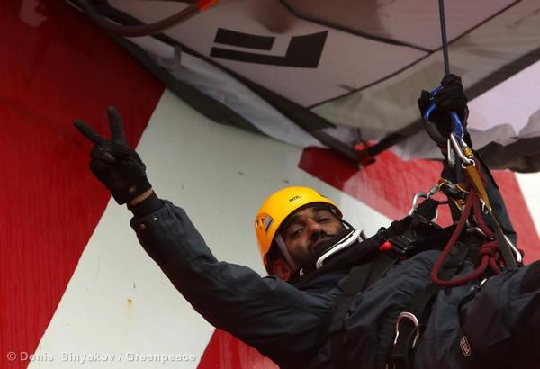
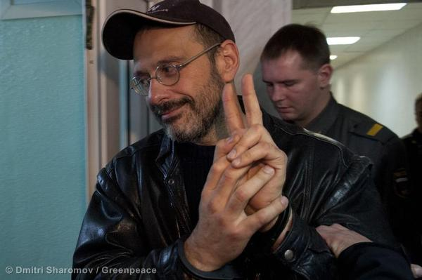
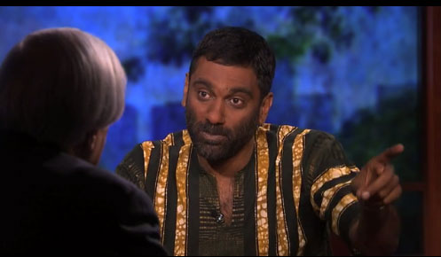
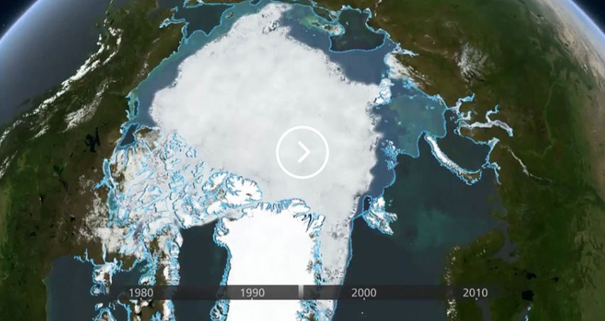
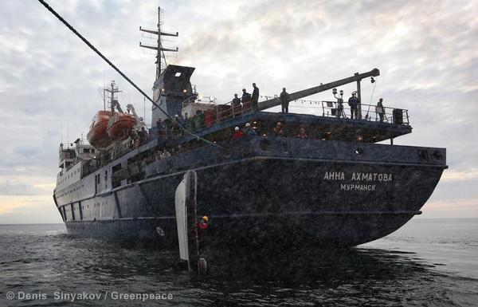
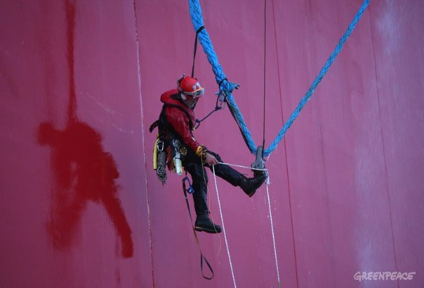
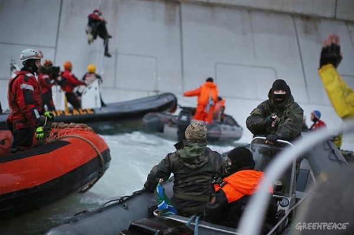
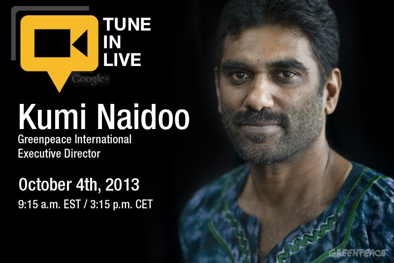

-
 Greenpeace International executive director Kumi Naidoo has written to President Vladimir Putin offering to travel to Moscow as early as possible to meet with the Russian President, in an effort to end the continued incarceration of 28 peaceful activists and two freelance journalists. In the letter, delivered today to the Russian embassy in The Hague, Naidoo offers to move his life to Russia and act as a guarantor for the good conduct of the activists if they are released on bail. Read more
-
 The Dutch government today announced that it would initiate arbitration proceedings against Russia under the UN Convention of the Law of the Sea to secure the release of 28 Greenpeace International activists, plus a freelance photographer and a freelance videographer, currently being detained in Russia on piracy charges. Read more
-
 In this clip, the executive director of Greenpeace International, Kumi Naidoo, talks with Bill Moyers about the ongoing incident and his concerns for the crew, who are citizens of 18 countries. Read more
-
"This is a disproportionate use of state authority to try to silence off every important global conversation that needs to be had, because right now we are reaching the tipping point on climate." Read more
-
Take a journey into the Arctic and explore for yourself its natural wonders and the threat of the encroaching oil industry. Explore now
-
Gazprom may not be as familiar to you as BP or Exxon, but they’re just as capable of making history with a catastrophic oil spill. The Russian oil giant is the first company to start oil production in the Arctic after their failed attempt last year in addition to Shell’s year of drilling mishaps.
Read more
-
At 4.30am Moscow time, five inflatable boats were launched from the Greenpeace International ship Arctic Sunrise and headed towards the Gazprom oil platform Prirazlomnaya, in the remote Pechora sea. One of the inflatables was confronted by the Russian Coast Guard, and two activists were arrested. See photos
-
Crew members of the Arctic Sunrise reported that a total of 11 warning shots have been fired across the ship and the Coast Guard has threatened to fire at the ship itself if it does not leave the area immediately. View video
-
 Executive Director Kumi Naidoo held a Google Hangout for a live conversation about the Arctic 30 and the future of the Arctic. The director of the Arctic oil campaign, Ben Ayliffe, joined him to discuss what this means for Greenpeace's campaign to stop global warming and keep oil companies out of the Arctic. Watch now